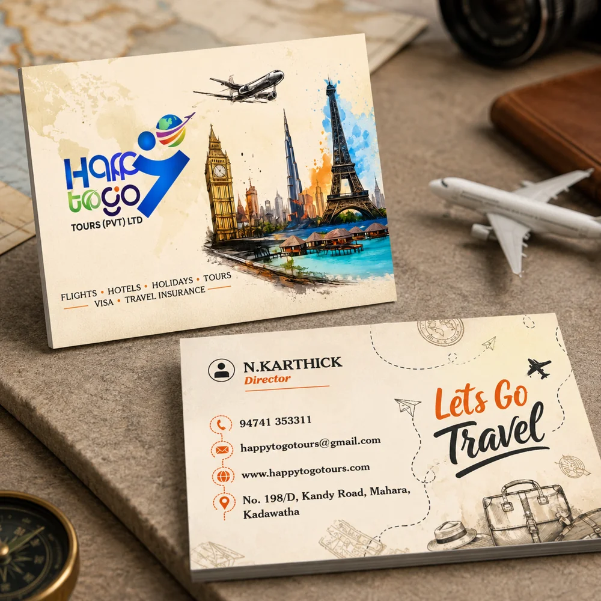

Design services / Business Card & Visiting Card Design in Madurai
Business Card & Visiting Card Design in Madurai
Sai Graphic Designs creates custom business cards and visiting cards in Madurai, with readable contact details and a layout that fits your brand. Request a front-only or double-sided design and confirm the final dimensions before work begins.

A card built around your information
The layout starts with your logo, name, role and preferred contact channels. We organise essential details so they remain legible at the finished size. Optional elements such as a QR code, bilingual text or additional staff names should be included in the brief.
Prepare your card brief
Send the final spelling of names, telephone numbers, email, address and website; supply your logo and brand colours. Share a preferred size and any printer template. For a QR code, supply its final destination and test it before printing. Each additional person or version should be agreed in the quote.
Artwork and print preparation
Review the front and back proof at the intended size. Check the safe area, bleed and export requirements with your chosen printer. Editable source files, PDF exports, revisions and the delivery date depend on the agreed project. Printing and shipping should be quoted separately if required.
Frequently asked questions
Can I receive an editable CorelDRAW file?
Request CDR before the project starts and specify your CorelDRAW version. The source format and compatibility must be agreed with the designer; an editable file is included only when it is part of your quote.
Do you design double-sided and bilingual visiting cards?
Yes. Provide the final text for each side and language, plus any font requirements. Text length affects spacing and readability. Translation and proofreading are separate from arranging supplied text.
Is printing included in the design quote?
Confirm whether your quote is for digital artwork only or includes printing. Paper, finish, quantity, delivery and printing costs must be agreed separately; do not assume they are included.
Request a business card design →
Based in Madurai, Tamil Nadu. Online design briefs are welcome from clients in India and abroad. Contact us to confirm your requirements.
Contact Sai Graphic Designs · View our portfolio
Related services and guides
- Logo Recreation & Vector Tracing in Madurai
- Bifold & Trifold Brochure Design in Madurai
- Check artwork before printing
Published by Sai Graphic Designs · Updated 20 October 2026